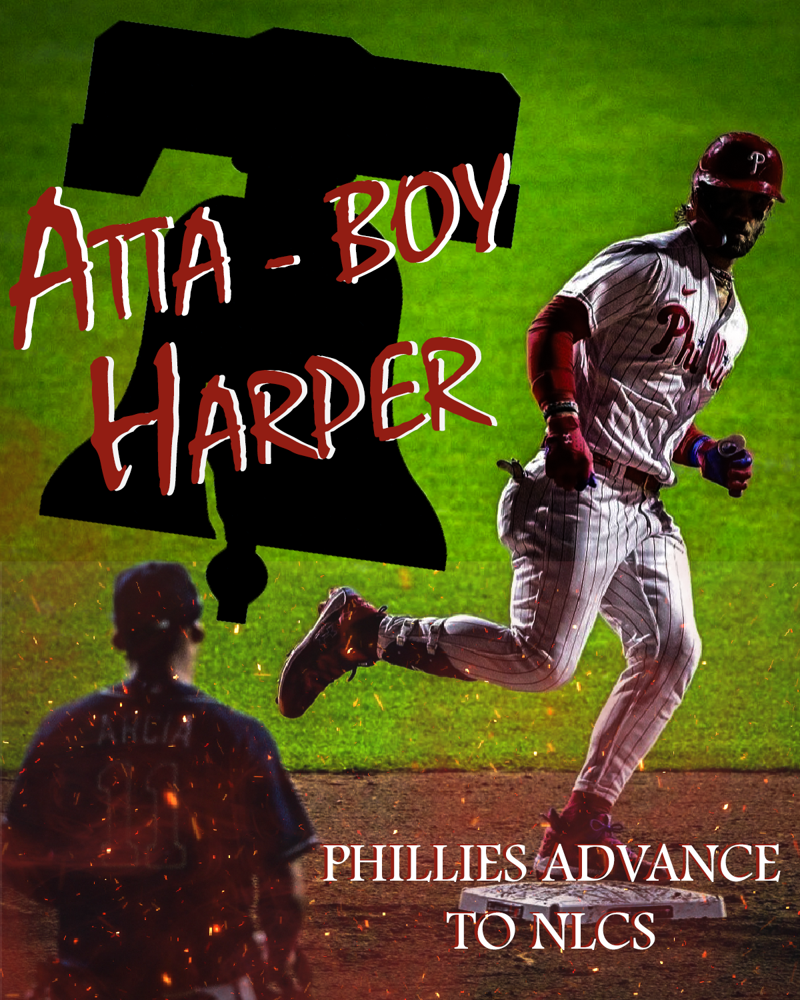
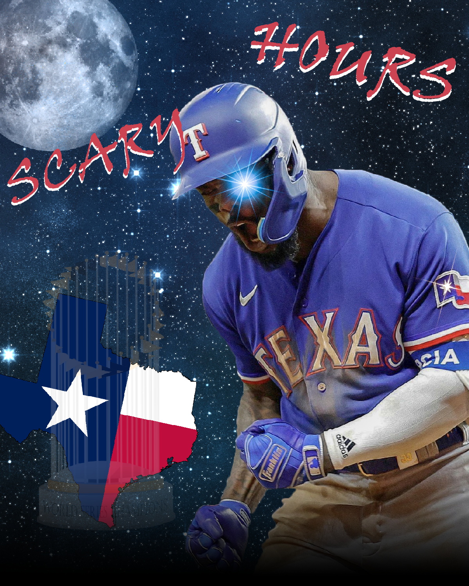

Over the summer of 2023, I have created several pieces of art in Adobe Photoshop. I
included some of the works that I have created so far.
This is a poster I made for Kingdom of the Planet of the
Apes.
This is one of my worst works in Photoshop. I wanted to create a mock-up pster for
the upcoming Planet of the Apes movie. I already watched the latest iteration of the
series with "War for the Planet of the Apes", which released in 2017. I wanted to
create something more original, but there were no photos or video of Cesar's son,
Cornelius. He is the assumed main character for the future after his father's
passing. I wanted to pay homage to Cesar while also looking forward to the new Ape
Kingdom.

Bryce Harper and Orlando Arcia after Game 3 of the 2023
NLDS.
I have made other works in Photoshop and Illustrator, but this one was a first for me.
I made this image before Game 3 even finished. I took the picture off of ESPN's
Instagram account and took it to Photoshop. The quote "Atta-Boy Harper", is a quote
from the other player in the picture Orlando Arcia. He made a funny remark towards a
baserunning mistake from Bryce Harper that caused his team to lose the game prior.
In retalliation, Harper hit two home-runs, starring down Arcia both times, en-route
to a 10-2 Phillies win.

Texas Rangers advance to the World Series.
This photo is very similar to the last one I made, but I wanted to show this as it is
my most recent work in Photoshop. I took a similar approach as the last edit by
taking the picture from ESPN. I used an image from to
be the background. I used a couple different png images off of Google, such as the
World Series trophy and the state of Texas. I used light images from texturelabs and
placed them on his eye and on the star patch on his jersey. I'm proud where I have
gotten to in the past five months and can't wait to see how much more I will
improve.